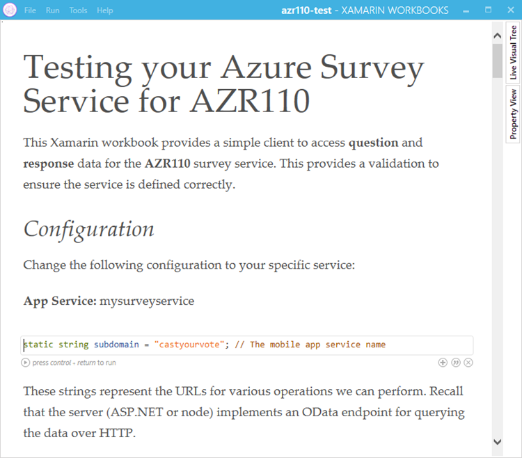
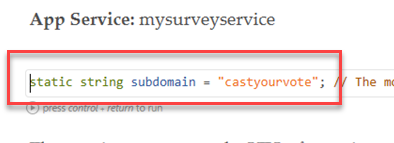
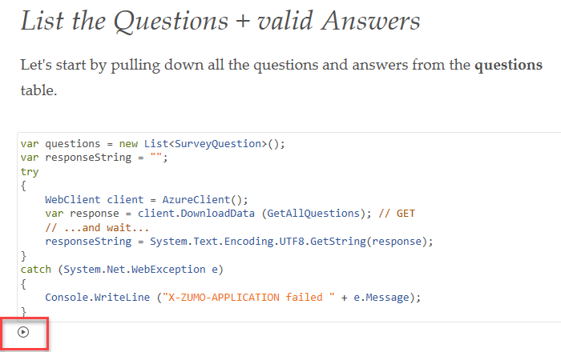

Duration
10 minutes
Goals
In this final independent lab exercise, we will use a pre-written Xamarin Workbook to test your service. It will execute all the of the endpoints and let you explore the service from the client perspective.
Assets
There is a sample markdown workbook file named azr110-test in the Exercise 5 folder.
Steps
Install Xamarin Workbooks
We are going to use a dynamic runtime/documentation engine called Xamarin Workbooks to test our service. This is an optional Xamarin install available for macOS or Windows.
- Download Workbooks from the installation link found on the documentation page.
- Run the installer to install the application to your machine.
Open the sample workbook
There is a sample workbook named azr110-test which has documentation and code to execute against your service. It uses C# and standard .NET classes to read and write data to your service.
- Open the azr110-test workbook in the Exercise 5 folder included with these lab materials by double-clicking on it - this should open Xamarin Workbooks.
- If it does not open Workbooks, then open the application from your Start Menu or Applications folder and then use the Open menu item to open the workbook.
- Once it's open, it should display the full markdown workbook. 
- You will need to change the subdomain variable that's defined at the top of the workbook - set this to your server app name, replacing the current value of "castyourvote". The workbook will add the proper suffix and endpoint information. 
Explore the workbook
The workbook is broken in sections which test your service. It starts by defining the C# client classes which will represent the JSON data - we aren't using a client side library here so it just has code to turn the object into the proper JSON shape.
Next there is a test function to execute each of your defined URL functions. To execute a block of code, press the "play" icon right below the code block: 
This will execute this block and all blocks above it. You can go down through the document trying out each function, and even changing the data supplied and executing the methods again to try different combinations.
If the service is properly configured (based on the prior lab instructions), it should be able to run with this script without any trouble. Have fun exploring!
Summary
Congratulations! You have successfully tested your Azure service!